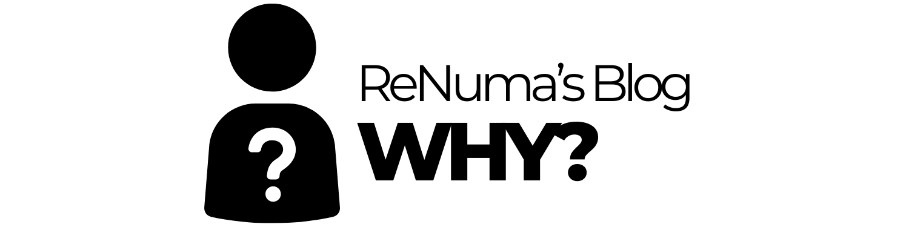

Benvenuti!
Mi chiamo Andrea Pompili e sono una persona appassionata di crescita personale, tecnologia, finanza, sport e viaggi. Negli ultimi anni ho cercato di dedicare sempre più tempo a imparare, esplorare e migliorarmi in tutte queste aree. Ho deciso di creare questo blog per condividere con voi ciò che sto imparando, i miei interessi e le mie esperienze. Qui troverete articoli che spaziano da temi pratici come la finanza personale, con consigli su come gestire meglio i propri soldi e pianificare per il futuro, a riflessioni su come migliorare la propria vita attraverso la tecnologia, l'informatica e lo sport.
Chi sono e cosa mi ispira
Nella vita quotidiana, lavoro nel settore IT, un campo che mi ha sempre affascinato per la sua costante evoluzione e le infinite possibilità che offre. La mia passione per la tecnologia mi ha portato a sperimentare con server, dispositivi smart e a imparare tutto ciò che posso su nuove soluzioni informatiche. Sono anche un runner, appassionato di sport, e ho recentemente completato una maratona, esperienza che mi ha insegnato molto sulla determinazione e sulla gestione delle sfide. Lo sport, in particolare la corsa, è un'importante parte della mia vita e mi aiuta a mantenere l'equilibrio tra corpo e mente, spingendomi sempre a superare i miei limiti.
Sono sempre alla ricerca di nuove opportunità di crescita e apprendimento, sia in ambito tecnico che personale. Credo che l'informazione e la curiosità siano gli strumenti più potenti per migliorarsi, e per questo motivo ho deciso di creare questo spazio dove posso raccogliere idee e condividerle con chiunque sia interessato a esplorare argomenti simili.
Cosa troverete in questo blog
In questo blog scriverò articoli su ciò che mi interessa di più e che credo possa essere utile anche a chi legge. Ecco alcuni dei temi principali che tratterò:
- Viaggi: Amo scoprire nuovi posti, immergermi in culture diverse e vivere esperienze uniche. Condividerò i miei consigli su come organizzare viaggi, racconti delle mie esperienze e suggerimenti su destinazioni che consiglio vivamente. Credo che i viaggi siano una delle migliori scuole di vita, in grado di aprire la mente e arricchire la propria visione del mondo.
- Finanza personale: La gestione dei soldi è uno degli aspetti fondamentali della nostra vita, ma non sempre ci viene insegnato come farlo nel modo giusto. Qui parlerò di strategie per risparmiare, investire, gestire il denaro in modo più consapevole e come pianificare il proprio futuro finanziario. Condividerò anche alcuni dei metodi che personalmente utilizzo per migliorare la mia gestione economica.
- Informatica e tecnologia: Mi interessa molto anche il mondo dell'informatica, sia a livello professionale che come hobby. Qui discuterò di nuove tecnologie, software, app e strumenti digitali che mi aiutano nel lavoro e nella vita quotidiana. Se anche voi siete appassionati di tech o vi interessa sapere come sfruttare al meglio i vostri dispositivi, troverete sicuramente articoli interessanti.
- Sport e benessere: Lo sport è una parte fondamentale della mia vita. Mi piace condividere consigli su come migliorare la propria forma fisica, superare sfide personali e mantenere un equilibrio tra corpo e mente. Inoltre, parlerò di come lo sport e la corsa, in particolare, abbiano un impatto positivo sulla mia vita quotidiana e sul mio sviluppo personale.
Un viaggio verso la crescita
Ogni giorno cerco di imparare qualcosa di nuovo, che sia un concetto tecnologico, una strategia finanziaria o semplicemente una nuova destinazione da visitare. La mia missione con questo blog è quella di condividere il mio percorso di crescita e aiutare chiunque voglia migliorare, sia attraverso conoscenze pratiche che esperienze di vita. Non è mai troppo tardi per imparare qualcosa di nuovo, ed è questo che mi motiva ogni giorno.
Mi auguro che questo blog possa essere un punto di riferimento per chiunque sia alla ricerca di idee fresche, ispirazione o semplicemente voglia condividere esperienze su temi che ci accomunano. Se avete domande o volete approfondire qualche argomento in particolare, non esitate a scrivermi. Sarò felice di ascoltare le vostre opinioni e di condividere il mio punto di vista.